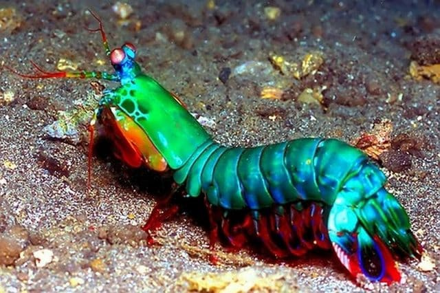

Mantis shrimps are predators which kill their prey by hitting them at high speed. They have large complex eyes and are highly coloured.
Mantis shrimps have two methods of attack; they can bespearers or smashers.
They strike by rapidly unfolding and swinging their claws at the prey, and can cause serious damage on victims larger than themselves.
Their eyes are mounted on mobile stalks and constantly move about independently of each other. They are considered to be the most complex eyes in the animal kingdom.
The mantis shrimp has such good eyes that it can perceive both polarized light, and color vision outside the normal visual spectrum.
| species | types of cones |
| dogs | 2 |
| humans | 3 |
| butterflies | 5 |
| mantis shrimp | 16 |
Source: Wikipedia